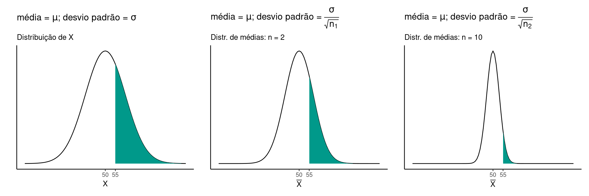
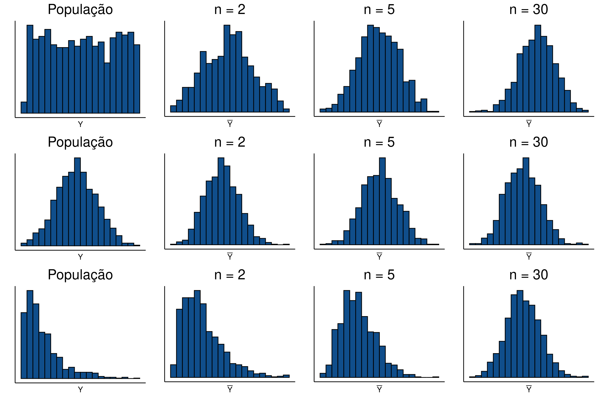
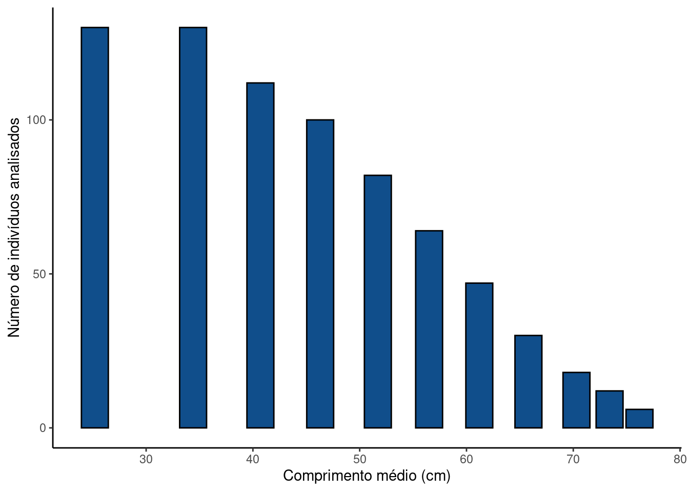

Capítulo 25 Alguns modelos são determinísticos
Neste capítulo iremos retornar às funções no R. Para tal, carregue os pacotes
ggplot2egridExtra.
library(ggplot2)
library(gridExtra)Como veremos no Capítulo 26, modelos estatísticos são compostaos por uma porção estocástica (ou aleatória) e uma porção determinística. Abaixo iremos analisar algumas funções determinísticas, a maioria delas apresentada no livro Ecological Models and Data in R (Bolker 2008).
25.1 Modelo linear
É o modelo determinístico mais simples para descrever a a relação entre uma variável resposta \(Y\) e uma variável preditora \(X\) através dos parâmetros \(\beta_0\) e \(\beta_1\), conforme a equação.
\[Y = \beta_0 + \beta_1X\]
Falamos deste modelo no capítulo sobre regressão linear (Capítulo 13). Vamos a um exemplo no R.
b0 <- 0
b1 <- 2
df <-data.frame(X = seq(0, 50, by = 5))
df <- df %>% mutate(Y = b0 + b1 * X)
ggplot(df, mapping = aes(x = X, y = Y)) +
geom_point()Na figura acima, temos cada um dos pontos em \(Y\) como função linear de \(X\). Os comandos cima são entendidos como:
Determinamos os parâmetros \(\beta_0 = 0\) e \(\beta_1 = 2\);
Criamos um
data.framecontendo uma sequnecia de pntos em \(X\) ;Atualizamos o
data.framecom a variável \(Y\) como função linear de \(X\);Criamos uma camada gráfica (comando
ggplot) com as variáveis \(X\) e \(Y\);Preenchemos a camada com uma geometria de pontos.
Vamos substituir com uma figura em formato de linha
ggplot(df, mapping = aes(x = X, y = Y)) +
geom_line()No exemplo acima, temos os parâmetros \(\beta_0 = 0\) e \(\beta_1 = 2\). Isto significa que para \(X = 0\) o valor em \(Y = 0\). Conforme aumentamos \(X\) em uma unidade, \(Y\) aumenta em 2 unidades. No modelo linear, \(\beta_0\) é interpretado portanto como a altura em \(Y\) em que a reta cruza o eixo das ordenadas, enquanto \(\beta_1\) representa a taxa de incremento em \(Y\) para o aumento de uma unidade em \(X\).
Vamos inserir duas outras curvas à figura anterior modificando os valores de \(\beta_0\) e \(\beta_1\).
b0_i <- 0
b1_i <- 2
b0_ii <- 20
b1_ii <- 4
df <-data.frame(X = seq(0, 50, by = 5))
df <- df %>%
mutate(Y1 = b0_i + b1_i * X,
Y2 = b0_i + b1_ii * X,
Y3 = b0_ii + b1_i * X,
Y4 = b0_ii + b1_ii * X)
ggplot(df, mapping = aes(x = X)) +
geom_line(mapping = aes(y = Y1), col = 'black') +
geom_line(mapping = aes(y = Y2), col = 'blue') +
geom_line(mapping = aes(y = Y3), col = 'red') +
geom_line(mapping = aes(y = Y4), col = 'green') +
annotate(geom = "text", x = 24, y = mean(df$Y1) + 5,
label = bquote(Y == .(b0_i) + .(b1_i) * X), col = 'black', angle = 25) +
annotate(geom = "text", x = 24, y = mean(df$Y2) + 5,
label = bquote(Y == .(b0_i) + .(b1_ii) * X), col = 'blue', angle = 45) +
annotate(geom = "text", x = 24, y = mean(df$Y3) + 5,
label = bquote(Y == .(b0_ii) + .(b1_i) * X), col = 'red', angle = 25) +
annotate(geom = "text", x = 24, y = mean(df$Y4) + 5,
label = bquote(Y == .(b0_ii) + .(b1_ii) * X), col = 'green', angle = 45) +
ylab("Y")Entendendo os comandos em R
- Nos comandos acima, criamos um
data.framecom uma sequência em \(X\);
- Atualizamos o
data.framecom valores de \(Y_1\) até \(Y_4\), alterando a combinação dos parâmetros \(\beta_0\) e \(\beta_1\);
- Após criar uma camada gráfica com um \(X\) comum (comando
ggplot), adicionamos cada uma das linhas (comandogeom_line) escrendo as respectivas combinações de parâmetros (comandoannotate).
Modelo linear segmentado
Eventualmente, podemos ter um modelo linear segmentado, em que a primeira parte da reta tem uma inclinação diferente da segunda parte. Este modelo pode ser escrito como:
\[Y = \beta_0 + \beta_1X\]
se \(X \le \alpha\);
ou
\[Y = \beta_0 + \beta_{1}X + \beta_{2}(X - \alpha)\]
se \(X > \alpha\)
Veja que agora o modelo tem 4 parâmetros \(\beta_0\), \(\beta_1\), \(\beta_2\) e \(\alpha\). O valor de \(\alpha\) representa o ponto de quebra, onde a inclinação da reta muda. Se \(X\) está abaixo de \(\alpha\) temos o modelo linear comum. Entretanto, se estamos acima do ponto de quebra, a inclinação é dada pelos efeitos conjuntos de \(\beta_1\) sobre \(X\) somado ao efeito de \(\beta_2\) sobre a diferença \((X - \alpha)\).
a <- 30
b0 <- 10
b1 <- 1.5
b2 <- 2.5
df <-data.frame(X = seq(0, 50, by = 5))
df <- df %>%
mutate(Y = ifelse(test = X < a,
yes = b0 + b1 * X,
no = b0 + b1 * X + b2 * (X - a)
)
)
ggplot(df, mapping = aes(x = X, y = Y)) +
geom_line() +
annotate(geom = "text", x = 15, y = 38,
label = bquote(Y == beta[0] + beta[1]*X), angle = 33) +
annotate(geom = "text", x = 35, y = 90,
label = bquote(Y == beta[0] + beta[1]*X + beta[2]*(X - alpha)), angle = 58)25.2 Função potência
As função potência têm um longo histórico de aplicações em ciências naturais em que diversas relações fisiológicas podem ser descritas por este tipo de relação funcional. Veja por exemplo livro o clássico The Ecological Implications of Body Size (Peters and Peters 1986).
Uma relação potência é exemplo de modelo não-linear descrito por:
\[Y = \beta_{0}X^{\beta_{1}}\]
b0 <- 10
b1 <- 3
df <-data.frame(X = seq(0, 10, length = 100))
df <- df %>% mutate(Y = b0 * X^b1)
ggplot(df, mapping = aes(x = X, y = Y)) +
geom_line()
A representação linear da função potência
Embora descreva uma relação funcional não-linear, a função potência têm sido historicamente ajustada por modelos lineares devido a seguinte relação:
\(Y = \beta_{0}X^{\beta_{1}}\)
\(log(Y) = log(\beta_{0}X^{\beta_{1}})\)
\(log(Y) = log(\beta_{0}) + log(X^{\beta_{1}})\)
\(log(Y) = log(\beta_{0}) + \beta_{1}log(X)\)
Esta relação permite que os parâmetros \(\beta_0\) e \(\beta_1\) da relação potência possam ser ajustados por regressões lineares simples (Capítulo 13) após a aplicação da transformação logarítmica em \(Y\) e \(X\). Atualmente, diante da facilidade computacional de ajustes de modelos não-lineares, a necessidade desta transformação têm sido discutida na literatura. Para uma análise desta questão veja: Xiau et al., (2011) e Packard, (2013).
Veja a relação gráfica descrita por \(log(Y)\) e \(log(X)\) após as trnasformações. Nesta figura, o intercepto da curva é dados por \(log(\beta_0)\) enquanto a inclinação é dada pelo efeito de \(\beta_1\) sobre \(log(X)\).
b0 <- 10
b1 <- 3
df <-data.frame(X = seq(0, 10, length = 100))
df <- df %>% mutate(Y = b0 * X^b1)
ggplot(df, mapping = aes(x = log(X), y = log(Y))) +
geom_line()
As várias formas da função potência
Na função potência temos diferentes formatos possíveis, dependendo dos valores de \(\beta_1\).
b0 <- 10
df <-data.frame(X = seq(0, 10, length = 100))
df <- df %>%
mutate(Y1 = b0 * X^3,
Y2 = b0 * X^1,
Y3 = b0 * X^-0.5,
Y4 = b0 * X^0.5)
g1 <- ggplot(df, mapping = aes(x = X, y = Y1)) +
geom_line() +
annotate(geom = "text", x = 2.5, y = 7500,
label = bquote(beta[1] > 1))
g2 <- ggplot(df, mapping = aes(x = X, y = Y2)) +
geom_line() +
annotate(geom = "text", x = 2.5, y = 50,
label = bquote(beta[1] == 1))
g3 <- ggplot(df, mapping = aes(x = X, y = Y3)) +
geom_line() +
annotate(geom = "text", x = 5, y = 20,
label = bquote(beta[1] < 0))
g4 <- ggplot(df, mapping = aes(x = X, y = Y4)) +
geom_line() +
annotate(geom = "text", x = 6.5, y = 10,
label = bquote(beta[1] > 0 ~ "e" ~ beta[1] < 1))
grid.arrange(g1, g2, g3, g4, ncol = 2, nrow = 2)
25.3 Modelo de Michaelis-Menten (ou Resposta funcional do tipo II)
Leva este nome desde que foi proposta como um modelo matemático para descrever a velocidade (\(Y\)) da reação enzimatica para um volume crescente de substrato (\(X\)). A velocidade da reação aumenta gradativamente até atingir uma assíntota (em \(Y = \beta_0\)), quando todas as enzimas já estão ligadas ao substrado.
Este modelo é conhecido também em outras áreas. Em Ecologia decreve a relação funcional entre um predador e sua presa (Resposta funcional do tipo II). Neste caso, o modelo descreve a taxa de predação em função do número de presas, ou seja, o número de presas consumidas por um predador por unidade de tempo. O modelo prevê que à medida que o número de presas disponíveis aumenta os predadores são limitados pelo tempo de manuseio da presa. Portanto que há um limite na capacidade de um predador consumir as presas disponíveis mesmo em altas densidades. Em Pesca este modelo é conhecido como Modelo de Beverton e Holt, utilizado para prever o número de recrutas (peixes que entram para a pesca) em função do tamanho do estoque pesqueiro.
O modelo é dado por:
\[Y = \frac{\beta_0 X}{(\beta_1 + X)}\]
O parâmetro \(\beta_0\) descreve a assíntota do modelo, enquanto a taxa de meia saturação em \(Y\) (\(\frac{\beta_0}{2}\)) ocorre no ponto em que \(X = \beta_1\).
Vamos ao gráfico da função:
b0 <- 30
b1 <- 2
df <-data.frame(X = seq(0, 20, length = 100))
df <- df %>% mutate(Y = b0*X/(b1+X))
ggplot(df, mapping = aes(x = X, y = Y)) +
geom_line() +
geom_abline(intercept = b0, slope = 0, linetype = 'dotted', color = 'red') +
ylim(0, 35)
25.4 Resposta funcional do tipo III
Em situações de baixa densidade de presa, o aumento na taxa de predação pode ser manter reduzido devido à preferência do por outras presas mais abundante ou sua incapacidade de encontrar a vítima. Estas situações descrevem uma resposta Funcional do Tipo III. A padrão é uma curva sigmóide no início que atinge a assíntota no ponto em que \(Y = beta_0\) assim como a curva de Michaelis-Menten. O formato deste modelo é:
\[Y = \frac{\beta_0 X^2}{(\beta_1^2 + X^2)}\]
Compare este modelo com o anterior modificando os valores para os parâmetros \(\beta_0\) e \(\beta_1\).
b0 <- 30
b1 <- 2
df <-data.frame(X = seq(0, 20, length = 100))
df <- df %>% mutate(Y = b0*X^2/(b1^2+X^2))
ggplot(df, mapping = aes(x = X, y = Y)) +
geom_line() +
geom_abline(intercept = b0, slope = 0, linetype = 'dotted', color = 'red') +
ylim(0, 35)
25.5 Resposta funcional do tipo IV
O modelo anterior ainda pode ser extendido para um Resposta Funcional do Tipo IV pela adição de um parâmetro (\(\beta_2\)) ao modelo. O formato do modelo varia de um padrão assintótico (\(\beta_2 > 0\)) para um padrão unimodal (\(\beta_2 \le 0\)) com ponto máximo em \(X = \frac{-2\beta_1}{\beta_2}\).
O modelo é dado por:
\[Y = \frac{\beta_0 X^2}{(\beta_1 + \beta_2 X + X^2)}\]
Varie os valores de \(\beta_2\) e compare os padrões com os modelos de resposta funcional do Tipo II (Michaelis-Menten) e III.
b0 <- 30
b1 <- 20
b2 <- -4
df <-data.frame(X = seq(0, 50, length = 100))
df <- df %>% mutate(Y = (b0*X^2)/(b1 + b2*X + X^2))
ggplot(df, mapping = aes(x = X, y = Y)) +
geom_line() +
geom_abline(intercept = b0, slope = 0, linetype = 'dotted', color = 'red')
25.6 Função hiperbólica
Em ecologia a função hiperbólica pode ser utilizada para prever o resultado de um modelo de competição, assumindo que o recurso por unidade de área é constante e que o uso do recurso por indivíduo é proporcional ao inverso da densidade de organismos (\(X\)) por unidade de área. O resultado é uma redução no número de descendentes por indivíduos (\(Y\)) em função do aumento da densidade (\(X\)) e o modelo é dado por:
\[ Y = \frac{\beta_0}{\beta_1 + X}\]
Que tem o formato de:
b0 <- 10
b1 <- 3
df <-data.frame(X = seq(0, 20, length = 100))
df <- df %>% mutate(Y = b0/(b1 * X))
ggplot(df, mapping = aes(x = X, y = Y)) +
geom_line()
25.7 Função exponencial
O modelo exponencial á amplamente utilizado em ecologia. As aplicações mais simples são o crescimento (\(Y = \beta_0 e^{\beta_1 X}\)) e o decrescimento (\(Y = \beta_0 e^{-\beta_1 X}\)) exponencial.
b0 <- 2
b1 <- 1
df <-data.frame(X = seq(10, 20, length = 100))
df <- df %>% mutate(Y1 = b0 * exp(b1 * X),
Y2 = b0 * exp(-b1 * X))
g1 <- ggplot(df, mapping = aes(x = X)) +
geom_line(mapping = aes(y = Y1), col = 'black')
g2 <- ggplot(df, mapping = aes(x = X)) +
geom_line(mapping = aes(y = Y2), col = 'red')
grid.arrange(g1, g2, ncol = 2, nrow = 1)
25.8 Função logística
A função logística têm uma grande variedade de aplicações. Uma delas é o ajuste de modelo de dose-resposta para compreendermos por exemplo, o ponto em que um percentual da população sobrevive. Outra aplicação está no estudo da dinâmica de populações, onde o modelo prevê um aumento no número de indivíduos ao longo do tempo alcançando o equilíibrio. A função logística pode ser parametrizada de várias formas (Veja os exemplos). Uma forma amplamente utilizada em modelos estatísticos é:
\[Y = \frac{e^{\beta_0 + \beta_1 X}}{1 + e^{\beta_0 + \beta_1 X}}\]
Neste formato, \(\beta_0\) é um parâmetro de posição e \(\beta_1\) controla a inclinação da curva. O ponto de meia saturação (\(Y = 0,5\)) ocorre quando \(X = \frac{-\beta_0}{\beta_1}\).
Varie os dois parâmetros e veja o que ocorre com a figura abaixo.
b0 <- -10
b1 <- 3
df <-data.frame(X = seq(0, 8, length = 100))
df <- df %>% mutate(Y = exp(b0 + b1 * X) / (1 + exp(b0 + b1 * X)))
ggplot(df, mapping = aes(x = X, y = Y)) +
geom_line()
25.9 Modelo monomolecular
Tem um formato similar ao da função de Michaelis-Menten com assintota em \(\beta_0\) e taxa de incremento dada pelo valor de \(\beta_1\). É função é dada por:
\[Y = \beta_0 (1 - e^{-\beta_1 X})\]
b0 <- 30
b1 <- 1
df <-data.frame(X = seq(0, 8, length = 100))
df <- df %>% mutate(Y = b0 * (1 - exp(-b1*X)))
ggplot(df, mapping = aes(x = X, y = Y)) +
geom_line() +
geom_abline(intercept = b0, slope = 0, linetype = 'dotted', color = 'red')25.10 Modelo de Ricker
O modelo de Ricker é uma opção para descrever o crescimento populacional denso-dependente e portanto uma opção ao modelo Logístico. Em \(X = 0\), o modelo inicia com crescimento linear com inclinação dada pelo parâmetro \(\beta_0\) e atinge um pico em \(X = \frac{1}{\beta_1}\). O modelo é dado por:
\[Y = \beta_0 X e^{-\beta_1 X}\]
b0 <- 5
b1 <- 1.5
df <-data.frame(X = seq(0, 8, length = 100))
df <- df %>% mutate(Y = b0 * X * exp(-b1*X))
ggplot(df, mapping = aes(x = X, y = Y)) +
geom_line()
25.11 Modelo de Gompertz
O modelo de Gompertz é outra alternativa ao modelo Logístico. \(Y\) se aproxima de 1 à medida que \(X\) aumenta, entretanto, ao contrário do modelo logístico é assimétrico, e o ponto de inflecção ocorre a cerca de \(1/3\) do caminho até a assíntota. O modelo é dado por:
\[Y = e^{-\beta_0 e^{-\beta_1 X}}\]
b0 <- 5
b1 <- 1
df <-data.frame(X = seq(0, 8, length = 100))
df <- df %>% mutate(Y = exp(-b0 * exp(-b1 * X)))
ggplot(df, mapping = aes(x = X, y = Y)) +
geom_line()
25.12 Modelo de von Bertalanffy
O modelo de von Bertalanffy é uma opção para modelar o crescimento de organismos com crescimento indeterminado. A expressão abaixo utiliza os símbolos comumente empregado nestas situações, onde \(L_{\infty}\) é o ponto assintótico (tamanho máximo teórico do organismo), \(k\) é a taxa de crescimento, \(t_0\) o tempo em que o tamanho (\(Y\)) está em zero. O modelo é dado por:
\[Y = L_{\infty} (1 - e^{-k(X - t_0)})\]
Linf <- 30
k <- 1.2
t0 <- -0.1
df <-data.frame(X = seq(0, 5, length = 100))
df <- df %>% mutate(Y = Linf * (1 - exp(-k *(X - t0))))
ggplot(df, mapping = aes(x = X, y = Y)) +
geom_line()